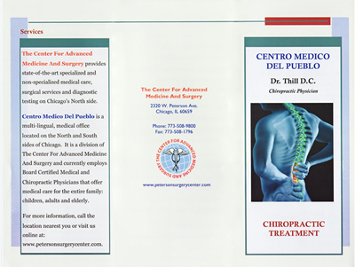
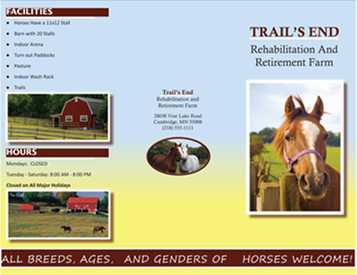
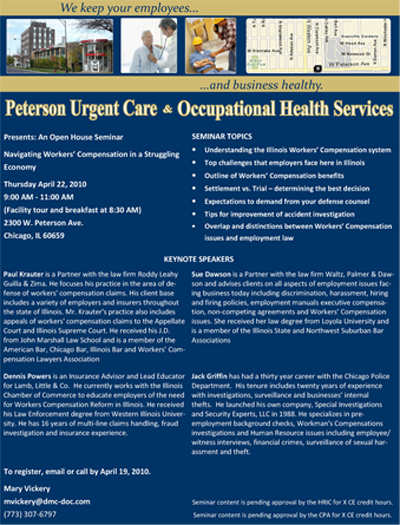
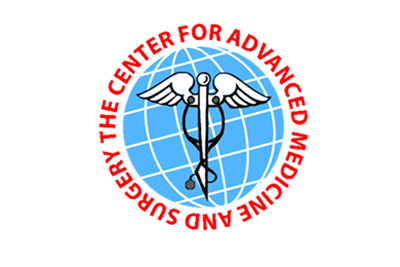
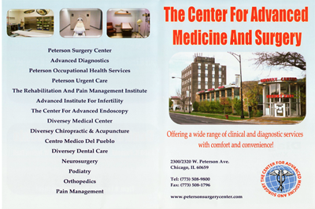
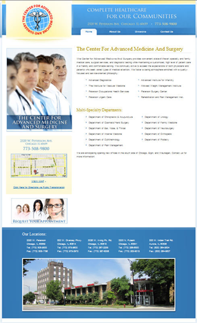

BACKGROUND
The majority of my portfolio samples are from my most recent place of employment, The Center For Advanced Medicine And Surgery. They are a multi-specialty medical and out-patient surgical facility located in the north side of Chicago. Prior to my employment, there was no in-house technical communicator or graphic designer. This enabled me to exercise my creative designing, technical writing and communication, and editing skills.
BROCHURE
This brochure was designed for the center's new In vitro Fertilization (IVF) lab. I collaborated with the lab's manager regarding content, design, and layout. It is currently available on the company's website at www.cntradvancedmed.com.
The brochure below was designed for a neurological surgeon who wanted to educate his patients on his most commonly performed procedures.

This brochure was designed for the rehabilitation office. This office specializes in workers' compensation cases and experiences a high volume of patients.

Dr. Thill is a Chiropractor who treats patients at more than one office. He wanted to develop his client base and asked that I develop a brochure from several of his personal flyers.
Designing a brochure for Trail's End, a fictitious horse farm, was an assignment for my Document Design course. The brochure was mentioned as one of the top 3 in the class.
BUSINESS CARD
The medical center was undergoing a major branding overhaul and campaign, which allowed me to develop new business cards for all of their doctors—below is a sample.

FLYER
The center's occupational health division holds in-house seminars throughout the year and mails flyers to new and existing clients. In addition to mailing these flyers, they are also sent as an e-blast.
LOGO
Creating the logo for the company kick-started the branding campaign. Because the center is both a multi-specialty medical and surgical facility, I decided to incorporate the medical symbol, the caduceus, against a globe, to represent community. I changed the staff to a scalpel and the serpents to a stethoscope. The owner very much wanted people to understand his desire to help all communities.
NEWSPAPER AD
Below are a few of the advertisements I designed for several newspapers. I worked in conjunction with the owner of the facility and external graphic designers.
POSTCARD
Designing and sending monthly postcards was an additional responsibility I assumed. Below is a postcard sent directly to Chicagoland medical specialists.
Mini Booklet
This mini booklet was the first all-inclusive advertisement that summarized all of the company's divisions: diagnostic, medical, and surgical.
WEBSITE
Prior to my employment, the company had a very small website that had no online traffic; today, the company maintains two websites. Gathering content with the doctors, writing, editing, taking pictures, and working closely with the web developers were a few of the responsibilities I managed. With the help of a Search Engine Optimization and Tracking campaign, the sites now have web presence.
